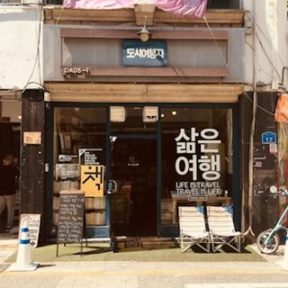

목업 역할
목업 상태
검색 조건
소속 BP ㈜한강상회 · BP000017 로 고정선택한 점포0개점
미운영
운영
폐점
폐점
직영점포
가맹점포
의 점포만 보는 중입니다 · 폐점 제외
1만 건이 넘어 파일을 만든 뒤 알려 드립니다
다 만들어지면 등록한 이메일로 내려받기 링크를 보냅니다. 링크는 24시간 동안 요청한 본인만 쓸 수 있습니다. 그동안 목록은 계속 쓸 수 있습니다.
방금 내려받았습니다. 1분 뒤에 다시 시도해 주세요.
엑셀 파일을 만들지 못했습니다. 잠시 후 다시 시도해 주세요.
목록 조회 결과는 그대로 둡니다.
| 순번 | 점포코드 | 점포명 | 점포유형 | 점포상태 | 사업자등록번호 | 연락처 | 근무직원수 | 등록일 |
|---|---|---|---|---|---|---|---|---|
| 1 | ST000007 | 모리커피 청담점 | 가맹점포 | 미운영 | - | 02-514-2270 | 0 | 2026-09-10 |
| 2 | ST000011 | 온기식당 일산점 | 가맹점포 | 운영 | 128-27-90456 | 031-906-4415 | 5 | 2026-02-23 |
| 3 | ST000010 | 온기식당 서면점 | 가맹점포 | 운영 | 602-19-33845 | 051-803-7712 | 6 | 2026-01-09 |
| 4 | ST000009 | 온기식당 둔산점 | 가맹점포 | 운영 | 305-14-72210 | 042-485-3390 | 6 | 2025-11-18 |
| 5 | ST000008 | 모리커피 부평점 | 가맹점포 | 운영 | 122-31-60021 | 032-512-6604 | 5 | 2025-10-06 |
| 6 | ST000006 | 모리커피 연남점 | 가맹점포 | 운영 | 105-22-81934 | 02-322-1180 | 6 | 2025-08-01 |
| 7 | ST000005 | 모리커피 을지로점 | 가맹점포 | 운영 | 201-12-34567 | 02-2265-0917 | 5 | 2025-07-15 |
| 8 | ST000004 | 온기식당 광화문점 | 직영점포 | 운영 | 104-81-55120 | 02-734-5528 | 6 | 2025-06-02 |
| 9 | ST000003 | 온기식당 판교점 | 직영점포 | 운영 | 131-81-44710 | 031-8017-2231 | 7 | 2025-05-20 |
| 10 | ST000002 | 모리커피 성수점 | 직영점포 | 운영 | 101-81-22302 | 02-462-7719 | 8 | 2025-04-11 |
| 11 | ST000012 | 모리커피 합정점 | 가맹점포 | 폐점 | 105-31-44120 | 02-336-4450 | 0 | 2025-02-14 |
모리커피 청담점ST000007 · 가맹점포미운영
근무직원0명
연락처02-514-2270
지역서울 강남구

온기식당 일산점ST000011 · 가맹점포운영 근무직원5명 연락처031-906-4415 지역경기 고양시 온기식당 서면점ST000010 · 가맹점포운영 근무직원6명 연락처051-803-7712 지역부산 부산진구 온기식당 둔산점ST000009 · 가맹점포운영 근무직원6명 연락처042-485-3390 지역대전 서구 모리커피 부평점ST000008 · 가맹점포운영 근무직원5명 연락처032-512-6604 지역인천 부평구 모리커피 연남점ST000006 · 가맹점포운영 근무직원6명 연락처02-322-1180 지역서울 마포구 모리커피 을지로점ST000005 · 가맹점포운영 근무직원5명 연락처02-2265-0917 지역서울 중구 온기식당 광화문점ST000004 · 직영점포운영 근무직원6명 연락처02-734-5528 지역서울 종로구 온기식당 판교점ST000003 · 직영점포운영 근무직원7명 연락처031-8017-2231 지역경기 성남시 모리커피 성수점ST000002 · 직영점포운영 근무직원8명 연락처02-462-7719 지역서울 성동구 모리커피 합정점ST000012 · 가맹점포폐점 근무직원0명 연락처02-336-4450 지역서울 마포구조회된 점포가 없습니다.
대표 이미지가 없는 점포는 점포 아이콘이 선다. 근무직원은 그 점포를 근무지로 하는 재직 직원 수이고, “사업자정보 미인증”이 보이면 사업자등록번호가 없는 점포다. 엑셀에는 목록 항목과 사업자정보를 함께 담고 대표자 연락처만 가운데자리를 가린다. 파일에는 암호를 걸지 않는다.